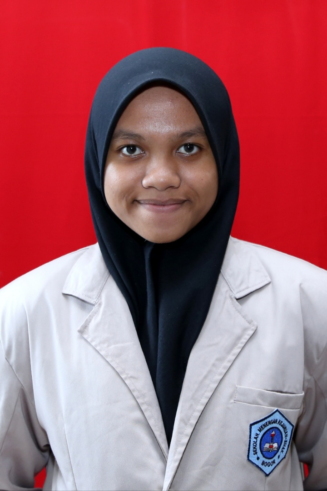

| Nama Panjang | Khoirunisa Larasati |
| Nama Panggilan | Laras |
| Agama | Islam |
| Tempat, Tanggal Lahir | Bogor, 3 Juni 2003 |
| Anak Ke | 3 (tiga) dari tiga bersaudara |
| Alamat | Jalan Raya Pemda No.54 Kampung Tunggilis Rt 01/13, Kedung Halang, Bogor Utara |
| Nomor Telepon | 087770191659 |
| Sekolah | SMA-SMAK Bogor |
| Alamat Email | khoirunisa65@smakbo.sch.id |
| Foto |  |
Semenjak sekolah libur selama kurang lebih satu tahun karena pandemi Covid-19, banyak sekali pola belajar saya yang harus saya rubah selama pembelajaran jarak jauh. Awal pandemi adalah masa masa tersulit saya. Mengapa saya mengungkapkan hal itu, karena saya sangat merasakannya betapa sulit menyesuaikan diri dengan pembelajaran daring. Saya yang awalnya tidak terlalu mengerti tentang teknologi, kini harus dipaksa mengerti demi keberlangsungan sekolah saya dirumah selama pandemi ini. Hal yang sangat saya ingat dimana saya tidak terlalu mengerti bagaimana cara mengconvert tugas saya ke pdf, sampai sampai saya harus mencari tutorialnya diyoutube. Tapi seiring berjalannya waktu saya sudah mulai terbiasa dengan pembelajaran daring ini. Lambat laun saya mulai mengerti cara menggunaan google classroom, zoom, google meet, dan lain-lain. Awalnya saya fikir belajar dirumah akan jauh lebih menyenangkan daripada belajar offline disekolah. Ternyata saya salah. Nyatanya sekolah secara daring sangat menyulitkan saya, mengingat saya bersekolah di SMK-SMAK Bogor. Sekolah Menengah Kejuruan tanpa praktek ibaratkan kita hanya belajar menaiki sepeda tetapi kita hanya melihat tutorialnya diyoutube saja tanpa kita mempraktikannya secara langsung. Tentu sangat sulit bukan? Belum lagi selama pembelajaran daring ini jaringan internet di rumah saya sangat buruk. Karena buruknya jaringan internet dirumah saya, terkadang saya telat mengumpulkan tugas dan harus mengonfirmasi kepada guru yang bersangkutan.
Dimasa Pembelajaran Jarak Jauh selama pamdemi covid-19 kita harus tetap menjaga stamina tubuh kita agar kita tidak mudah sakit. Hal ini sangat saya rasakan dimasa Pembelajaran Jarak Jauh saya. Saya merasa selama PJJ ini jam tidur saya menjadi berantakan.Hal itu disebabkan karena banyaknya tugas yang diberikan oleh guru. Belum lagi jika esok harinya akan diadakan ulangan, mau tidak mau kita harus mempersiapkannya agar kita mendapatkan nilai yang memuaskan. Saya pernah dalam posisi yang sangat down karena fisik saya sudah tidak kuat lagi. Karena saya merasa ada yang tidak beres dengan fisik saya, orang tua saya pun memutuskan untuk memeriksakannya ke rumah sakit. Benar saja, tubuh saya terserang penyakit dan itu membuat saya harus sering check up ke rumah sakit. Jujur saja, hal itu sangat menggangu jam belajar saya karena jadwal untuk check up dengan jam waktu pembelajaran sekolah saya sangat bentrok, jadi mau tidak mau saya harus izin di jam pelajaran yang bersamaan dengan waktu check up saya. Setelah beberapa bulan berlalu alhamdulillah kondisi tubuh saya sudah normal kembali dan membuat saya semangat untuk belajar lagi.
Selama PJJ saya menemukan banyak sekali manfaat yang saya peroleh. Salah satunya saya jadi menemukan aktivitas baru yang sangat bermanfaat bagi saya, contohnya saya jadi bisa belajar memasak. Dari dulu saya ingin sekali belajar memasak agar saya pandai memasak seperti ibu saya, tetapi saya tidak punya waktu untuk itu. Selain itu saya juga jadi lebih punya banyak waktu untuk keluarga saya selama saya dirumah. Saya jadi lebih sering membantu orang tua saya yang kebetulan punya toko glosir dirumah, tentunya juga dengan menaati protokol kesehatan yang ada, seperti memakai masker, menjaga jarak, dan mencuci tangan. Selain itu juga, pengalaman sakit yang saya derita selama PJJ ini membuat saya semakin sadar akan pentingnya menjaga kesehatan, demi kebaikan diri sendiri dan juga orang lain.
Jadi kesimpulannya meskipun banyak kendala yang saya hadapi selama PJJ ini, banyak sekali hal baik yang bisa saya petik dan saya jadikan pelajaran bagi diri saya sendiri. Untuk teman teman semua yang sedang merasakan hal yang sama, tetap ikhlas menjalani ini semua dan selalu patuhi protokol kesehatan dimanapun kita berada ya. Stay safe and healthy untuk kita semuaa.....